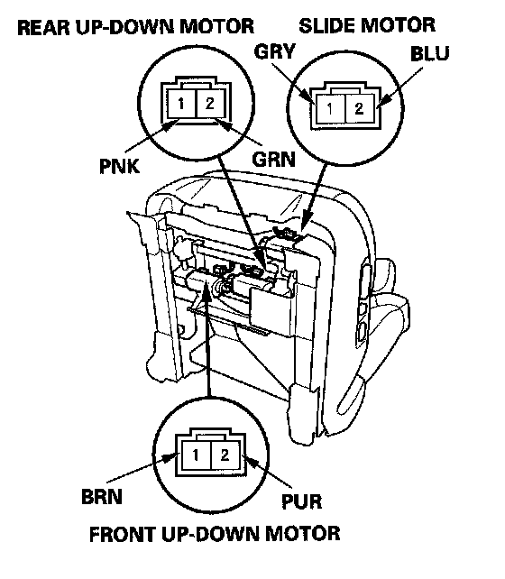
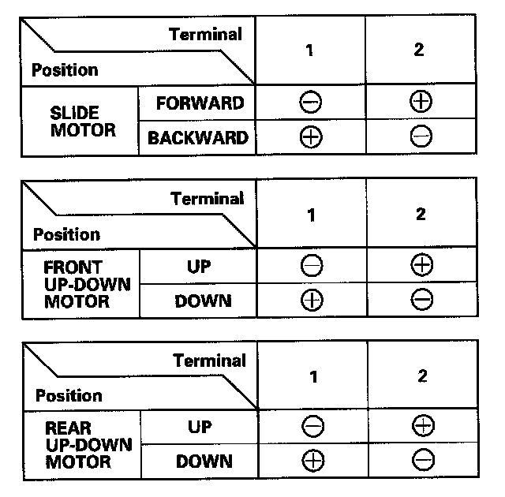
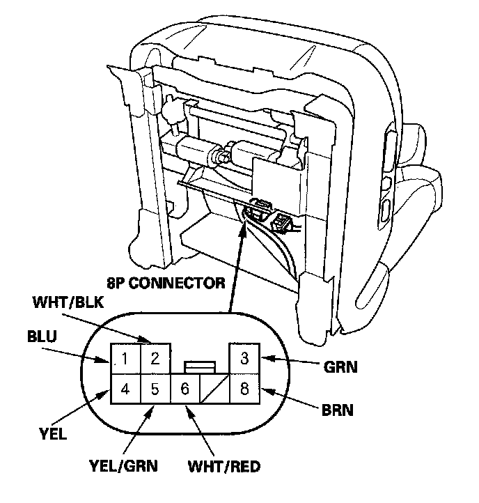
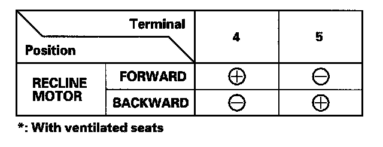

Driver's Power Seat Motor Test
Driver's Power Seat Motor TestSlide motor. Front up-down motor. Rear up-down motor
1. Remove the driver's seat.

2. Disconnect the 2P connector from each power seat motor.
NOTE: All connectors are terminal side of male terminals.

3. Test each motor by connecting power and ground according to the table. When the motor stops running, disconnect battery power immediately.
4. If the motor does not run or fails to run smoothly, replace it:
- Slide motor
- Front up-down motor
- Rear up-down motor
Recline motor
1. Remove the driver's seat.

2. Disconnect the power seat wire harness 8P connector from the recline motor/lumbar support motor subharness.

3. Test motor by connecting power and ground according to the table. When the motor stops running, disconnect battery power immediately.
4. If the motor does not run or fails to run smoothly, check for an open in the wire between the 8P connector and recline motor. If the harness is OK, replace the recline motor.